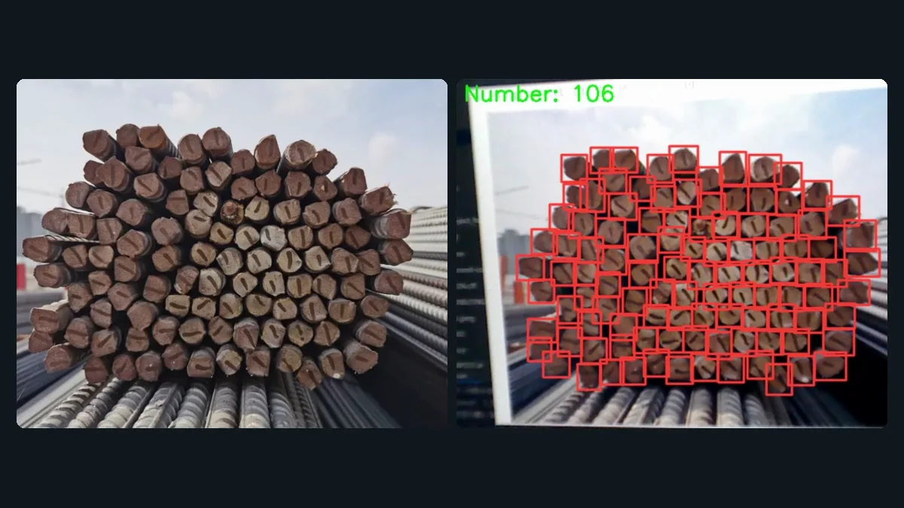
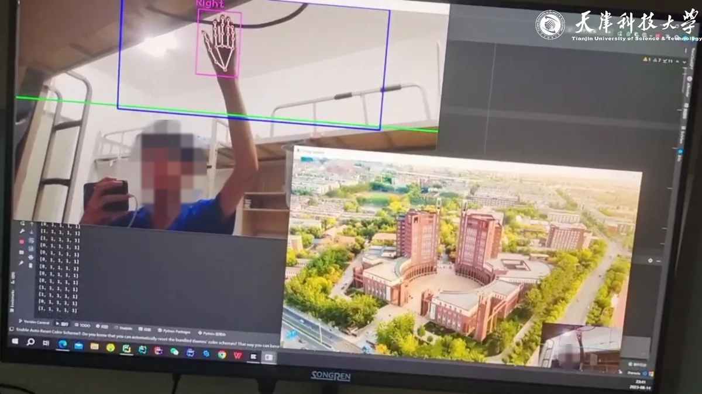

国家级大学生创新创业训练计划
工业钢筋实时计数
用改进的 YOLOv8 检测钢筋端面，将模型部署到 PDA，支持仓储现场实时计数。
90% 计数准确率−30% 模型参数量
查看技术细节
搭建模块化 PyTorch 检测框架，用 GAN 生成端面图像补充数据，引入轻量高斯注意力和 SCConv，并改进损失函数处理端面粘连与尺寸差异。单帧推理低于 50 ms，仓储人工巡检效率提升 90%。
SELECTED PROJECTS

国家级大学生创新创业训练计划
用改进的 YOLOv8 检测钢筋端面，将模型部署到 PDA，支持仓储现场实时计数。
搭建模块化 PyTorch 检测框架，用 GAN 生成端面图像补充数据，引入轻量高斯注意力和 SCConv，并改进损失函数处理端面粘连与尺寸差异。单帧推理低于 50 ms，仓储人工巡检效率提升 90%。

手势交互
用手势控制演示与创作的交互平台。

实时识别
从实时画面中定位手写数字，并显示识别结果。
EXPERIENCE
深信服科技
参与 DSP 数据安全产品迭代。将办公文档和图像解析为结构化数据，支持敏感数据识别与分类分级。
中国广核集团
负责智能巡检中的视觉算法开发，从数据处理和模型调优做到无人机、巡检机器人端部署。
EDUCATION & RESEARCH
2025.09 入学
人工智能 · 硕士
2021.09 — 2025.06
人工智能 · 本科 · GPA 4.0 / 5.0 · 专业前 5%
国家励志奖学金、校一等奖学金